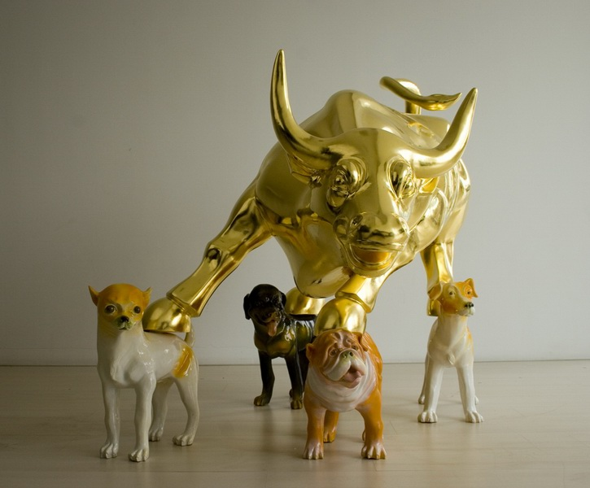

狗年牛市 Dog Year
装置 Installation
2006年是中国传统的狗年，对于全球的金融市场，则是众望所归、皆大欢喜的一年，中国当代艺术在国际拍卖市场上连创新高。艺术家就是受了这种环境的启发和影响而做的这个雕塑。
2006 is the Year of the Dog according to Chinese tradition. For the global financial market it has been a happy year. During this year, also Chinese contemporary art in the international auction market hit incredible highs. This environment has inspired the artist and the influenced he received is visible in the realization of this sculpture.
